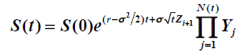

matlab project2 蒙特卡罗方法为美式期权定价
2016-06-28
matlab project 2——蒙特卡洛模拟的美式期权
Stock prices sometimes change by large values in short periods of time, making a jump diffusion model be a more appropriate model to capture this characteristic than a plain diffusion model. We extend the Black-Scholes to include jumps, resulting in the following model in risk-neutral world,

where Yi ~U(1.1, 1.3) and N(t) is a Poisson process with lambda=4 per year.
其中Z服从标准正态分布。
思路如下（这里只是简单思路，具体可以上网上看paper）：
- 先模拟出每个节点的股票价格S和在此点执行所能得到的收益f；
- 总共模拟MxN个，M代表M条路径，N代表将一段时间分为N期。用S(n)代表股价的每一列。
- 如果在S(n)选择执行，即f(n)>0,那么就将f(n+1)与对应的S(n)进行一元二次回归，得到一个模型，系数向量为p；
- 将S(n)全部代入模型中得到拟合值y；
- 将f与y进行比较，f>y的值就留下，f<y的值令其为0；
- 从左往右汇总f，如果某个值所在路径上它是第一个大于0的值，其值有效，否则无效。
代码如下（由于上述步骤中有很多需要判断，这样写代码就会显得很乱而且很长，所以充分利用matlab矩阵运算和逻辑运算简化了代码）：
ps：运行代码有彩蛋哦。。（我真无聊(￣、￣)）
function [P]=regressionP(M,N)
r=0.1;
sigma=0.1;
S0=90.44;
K=110;
T=3;
lambda=4;
dt=T/N;
S=zeros(M,N+1);
S(:,1)=S0;
f=zeros(M,N+1);
f(:,1)=0;
X=random('poisson',lambda*dt,M,N);
%下面的循环用来计算股票每个节点的价格以及执行所能得到的收益
for i=1:M
for j=2:N+1
Y=1.1+0.2*rand(1,X(i,j-1));
m=prod(Y);
S(i,j)=S(i,j-1)*exp((r-sigma^2/2)*dt+sigma*dt^0.5*randn())*m;
f(i,j)=max(K-S(i,j),0);
end
end
P=0;%初始化期权价格P
y=zeros(M,N-1);%初始化回归预测值
d=zeros(M,1);%初始化用来最后计数的值
for i=2:N
a=f(:,i+1);
b=S(:,i);%储存股票的价格
W=a(f(:,i)>0)*exp(-r*dt);
s=b(f(:,i)>0);
p=polyfit(s,W,2);%p是回归得到的系数
y(:,i)=polyval(p,b);
f(:,i)=f(:,i).*((f(:,i)>y(:,i))*1);%f矩阵中大于y的留下，小于y的为0
d=d+(f(:,i)>0)*1;
q=f(:,i);%储存f每一列
P=P+sum(q(d==1))*exp(-r*dt*(i-1));%只取每条路径上第一个大于0的f
end
%最后一列没有包含在循环中，单独计算，最后得到美式看跌期权价格P
d=d+(f(:,N+1)>0)*1;
q=f(:,N+1);
P=(P+sum(q(d==1))*exp(-r*T))/M;
load handel.mat;
sound(y)
由于蒙特卡洛采用的是正向求解的方法，我们无法计算在每个时刻继续持有期权的期望收益，从而无法比较在该时刻立即执行期权的收益与继续持有期权的期望收益，进而无法决定是立即执行期权还是继续持有期权。所以，直到几年前，人们还认为蒙特卡洛方法 只适合为具有固定执行时间的欧式期权定价，而不适合为美式期权定价。近年来，随着数理金融学的发展，出现了一些运用蒙特卡洛方法模拟美式期权定价的算法。其中，影响最大的是由Longstaff和Schwartz提出的最小二乘蒙特卡洛(LSM)模拟方法， 该方法已成为目前使用蒙特卡洛模拟美式期权定价的标准方法。